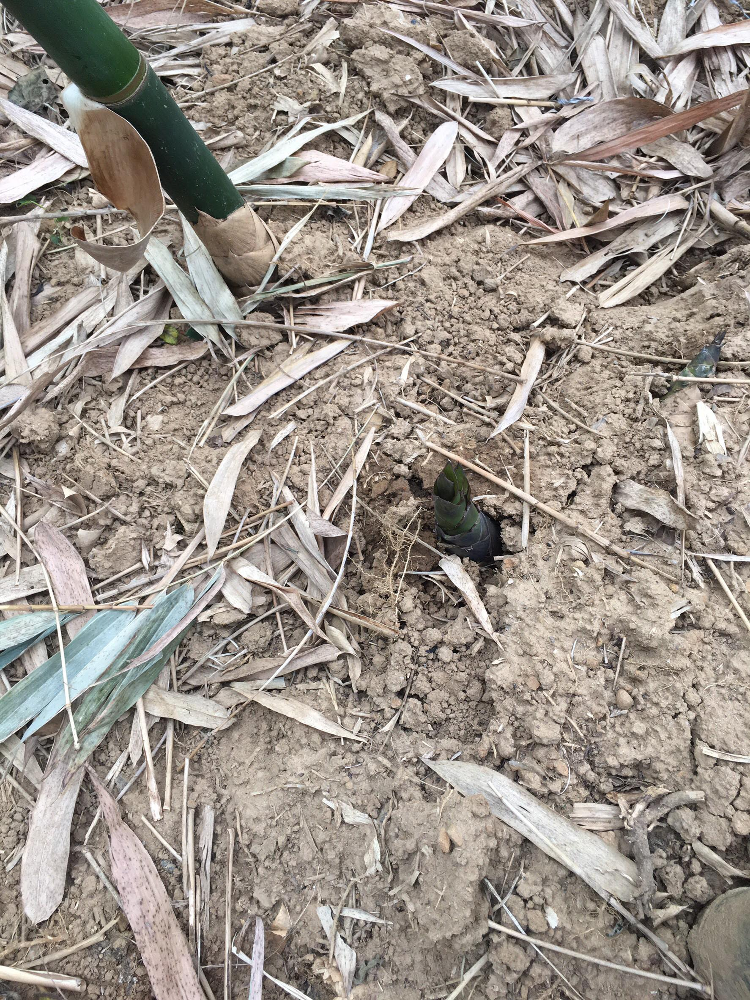

如何到達
我們先在蘆洲捷運站約定10點,在由同學的爸爸開車搭載我們到達紫雲農場, 全程花大約20分鐘左右即可到達.
訪談過程
我們到達之後受到山地主人吳國池先生的熱烈歡迎,並且在訪談的過程中吳國池先生也是知無不言 言無不盡的和我們分享他的竹筍過程與艱辛,與我們相談甚歡,在農務這方面,吳國池先生大大的增長我們對這方面的知識,也更讓我們體會到即使在怎麼平常的事物上,也必定會有它的專屬舞台,所有的人事物對這個世界都是有價值的,現在如若感覺不到自己的價值在哪,那只是自己還沒找到罷了,這世上是不會有無用之人的.
旗竿湖的命名由來
旗竿湖為什麼叫做旗竿湖,許多人認為說因為那座山叫做旗竿山所以湖泊就是旗竿湖,其實並不是,旗竿湖其實有一段的故事,在清朝年間吳氏祖先進京赴考,進士及第回鄉祭祖,朝廷御賜插旗竿祭祖以光耀門楣,後來旗竿消失無人知曉現在何處,但據說旗竿座就在旗竿湖底,所以這座湖便被後人稱作為旗竿湖.
竹筍寶寶蹦出來
竹筍在出土之前地表的土地會被下面的竹筍給頂出裂縫,而再出現裂縫竹筍要出土時不可給它照射到陽光,不然等它光合作用變綠後就會變苦,所以必須要注意那些裂縫才能採出最好吃的竹筍.
